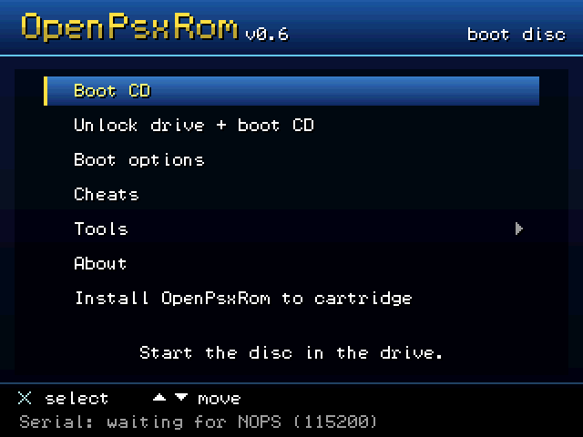

OpenPsxRom
Open-source firmware for PlayStation 1 cheat cartridges (Xplorer, Action Replay…).
OpenPsxRom replaces the firmware of a parallel-port cheat cartridge with a free one: a menu to boot
discs, cheats applied while the game runs, an in-game menu, memory card tools with compressed saves
kept in the cartridge, several firmwares on one cartridge, and the development features of Unirom
through the same serial protocol, so the existing nops tool works with it.


OpenPsxRom on a real PlayStation, captured over the serial port with tools/psxshot.py.
User guide
Source code: https://github.com/embarquech/OpenPsxRom (GPL-3.0-or-later).